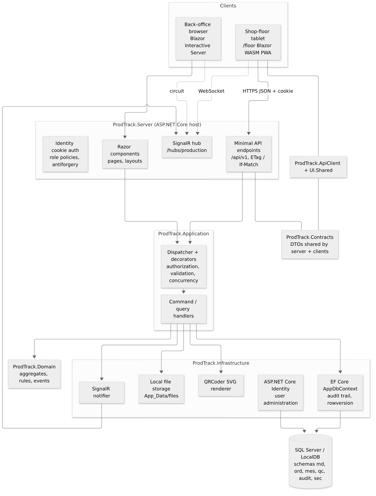
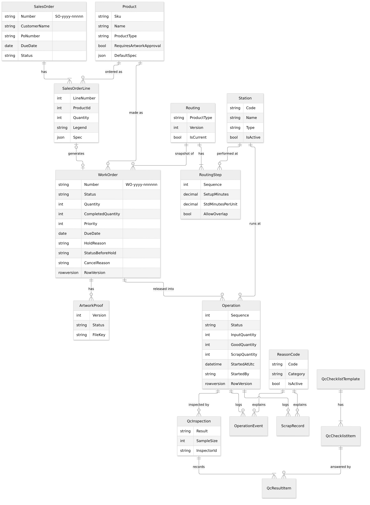
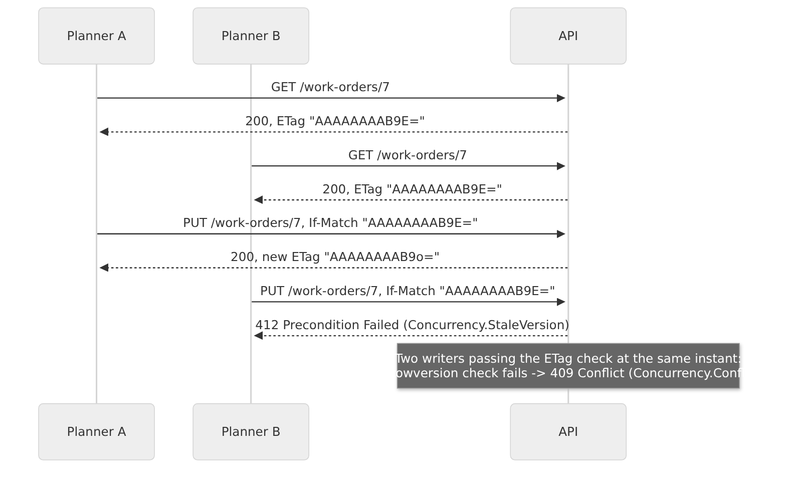
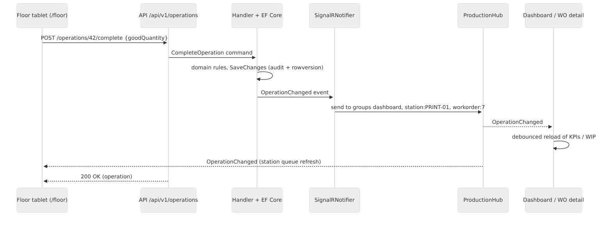

Overview
DMB ProdTrack is a .NET 10 web application with two front ends served by one ASP.NET Core host:
- a back office built with Blazor Web App (Interactive Server rendering) for planners, supervisors, QC and admins;
- a shop-floor PWA built with Blazor WebAssembly, served under
/floor, for station tablets.
Both use the same REST API (/api/v1), the same cookie-based ASP.NET Core Identity sign-in and the same SignalR hub
for live updates. Data lives in SQL Server (LocalDB for local development) through EF Core. This document reflects the
code on branch feature/sprint-2-3 (PR #2), 27 September 2026.
Architecture
Layers and projects
The solution (ProdTrack.slnx) follows Clean Architecture with a lightweight CQRS style (ADR-0001). Dependencies
point inwards; architecture tests (NetArchTest) fail the build if a layer references an outer one.
| Project | Layer | Responsibility |
|---|---|---|
ProdTrack.Domain |
Domain | Aggregates (WorkOrder, Operation, SalesOrder, Routing, Product, Station, ReasonCode, QcInspection, ...), invariants, state machines, Result/Error, domain events. No framework dependencies. |
ProdTrack.Application |
Application | Commands and queries with handlers, IDispatcher, decorators (authorization, validation, concurrency), FluentValidation validators, abstractions (IAppDbContext, INotifier, IFileStorage, IQrCodeRenderer, IPlantClock, ICurrentUser), role/policy definitions. |
ProdTrack.Infrastructure |
Infrastructure | EF Core AppDbContext and configurations, migrations, audit trail, number sequences, seeding, Identity stores and user administration, QRCoder renderer, local file storage, SignalR notifier. |
ProdTrack.Contracts |
Shared | Request/response DTOs and the hub contract shared by server and clients. |
ProdTrack.ApiClient |
Shared client | Typed HttpClient wrapper used by the PWA (antiforgery-aware). |
ProdTrack.UI.Shared |
Shared UI | Razor components shared between back office and PWA. |
ProdTrack.ShopFloor |
Presentation | Blazor WebAssembly PWA (/floor): station picker, queue, scan box, operation page, SignalR client. |
ProdTrack.Server |
Presentation / host | Minimal API endpoints, SignalR hub, Blazor Server pages, Identity UI (sign-in, change password), security setup, Serilog, health checks, hosting of the PWA. |

Request pipeline
- Endpoint (Minimal API) or Razor component builds a command/query from the request.
IDispatcherresolves the handler, wrapped by decorators (outermost first): Authorization (policy from[RequiresPolicy]) → Validation (FluentValidation) → Concurrency (mapsDbUpdateConcurrencyExceptiontoConcurrency.Conflict) → handler.- The handler loads aggregates through
IAppDbContext, calls domain methods that returnResult, and saves. SaveChangeswrites audit entries in the same transaction and dispatches domain events after commit (for example to the SignalR notifier).- Endpoints map
Resulterrors to ProblemDetails: Validation → 400, NotFound → 404, Conflict → 409, BusinessRule → 422, Forbidden → 403,Concurrency.StaleVersion→ 412,Concurrency.Conflict→ 409.
Technology stack
| Area | Technology | Version |
|---|---|---|
| Runtime / SDK | .NET, C# | SDK 10.0.401 (global.json, roll-forward latestFeature) |
| Web host | ASP.NET Core (Minimal APIs, Blazor Web App, SignalR) | 10.0 |
| Shop floor | Blazor WebAssembly PWA, SignalR client | 10.0 |
| Data access | EF Core (SqlServer provider; Sqlite for tests) | 10.0 |
| Database | SQL Server LocalDB MSSQLLocalDB (local); SQL Server / MonsterASP MSSQL (future hosting) |
- |
| Identity | ASP.NET Core Identity (EF stores), cookie auth | 10.0 |
| Validation | FluentValidation | 12.1.1 |
| DI scanning / decorators | Scrutor | 7.0.0 |
| QR codes | QRCoder (MIT) - SVG output | 1.8.0 |
| Logging | Serilog.AspNetCore, Serilog.Sinks.File, Serilog.Formatting.Compact | 10.0.0 / 7.0.0 / 3.0.0 |
| API docs | Microsoft.AspNetCore.OpenApi + Swashbuckle SwaggerUI (Development) | 10.0 / 10.2.3 |
| Unit/integration tests | xUnit, AwesomeAssertions, NSubstitute, Microsoft.AspNetCore.Mvc.Testing, TimeProvider.Testing | 2.9.3 / 9.6.0 / 6.2.0 / 10.0 / 10.10.0 |
| Architecture tests | NetArchTest.Rules | 1.3.2 |
| E2E tests | Microsoft.Playwright (Chromium) | 1.63.0 |
| Coverage | coverlet.collector, ReportGenerator (local tool) | 10.0.1 |
| CI | GitHub Actions (ubuntu-latest) | - |
Package versions are pinned centrally in Directory.Packages.props. Commercially licensed packages (FluentAssertions
v8+, MediatR v13+, AutoMapper) are deliberately avoided.
Data model
EF Core maps the domain to SQL Server schemas: md (master data), ord (orders and work orders), mes (execution),
qc (quality), audit and sec (Identity and data-protection keys). Specifications are stored as JSON columns.
Aggregates carry a SQL Server rowversion column used for optimistic concurrency.

| Entity | Schema | Notes |
|---|---|---|
| Product | md | SKU, type (PipeMarker, ValveTag, SafetySign, Label), RequiresArtworkApproval, default spec (JSON) |
| Station | md | Code, name, type (Prepress, Printing, Laminating, Engraving, Cutting, Inspection, Packing), active flag |
| ReasonCode | md | Code, description, category (Scrap, Pause, Downtime, Hold, Skip) |
| ColorScheme, SignalWord | md | ASME A13.1 and ANSI Z535 reference data |
| Routing, RoutingStep | md | Versioned per product type; one current version |
| SalesOrder, SalesOrderLine | ord | Number SO-yyyy-nnnnn, status Open/Closed/Cancelled; line spec snapshot |
| WorkOrder | ord | Number WO-yyyy-nnnnnn, optional SalesOrderLineId, spec snapshot, status, hold reason, StatusBeforeHold, CancelReason |
| ArtworkProof | ord | Versioned proof files with status Pending/Approved/Rejected/Superseded |
| Operation | mes | Sequence, station, status, input/good/scrap quantity, standard times, StartedAtUtc, StartedBy, rowversion |
| OperationEvent | mes | Start/pause/resume/complete events with reason, user, device and idempotency RequestId |
| ScrapRecord | mes | Quantity, reason, note, user, time |
| QcChecklistTemplate, QcChecklistItem | qc | Per product type; PassFail or Measured items with min/max/unit |
| QcInspection, QcResultItem | qc | Result Passed/Failed, sample size, inspector, per-item results |
| AuditEntry | audit | Entity, key, action, changes JSON (old → new), user, correlation id, UTC time |
| AppUser (+ roles) | sec | Identity user with display name, employee number, badge number, home station, IsActive, MustChangePassword |
| NumberSequence | ord | Per-kind, per-year counters with rowversion |
Migrations
| Migration | Content |
|---|---|
20260927124814_InitialCreate |
All schemas and tables of Sprint 0-1 (master data, orders, execution, QC, audit, Identity) |
20260927143317_Sprint23Execution |
WorkOrder.CancelReason, WorkOrder.StatusBeforeHold, Operation.StartedBy and related indexes |
dotnet ef database update creates a clean database from these migrations. The deploy workflow (future) applies an
idempotent script generated by CI instead of migrating at startup.
API reference summary
All endpoints are under /api/v1, require an authenticated user (fallback policy) and return ProblemDetails with a
traceId on errors. Unsafe requests from cookie-authenticated browsers must send the antiforgery token in
X-XSRF-TOKEN (fetch it from GET /api/v1/antiforgery). Swagger UI is available at /swagger in Development.
| Area | Endpoints | Policy |
|---|---|---|
| Me | GET /me |
ReadAll |
| Dashboard | GET /dashboard/wip |
ReadAll |
| Reference | GET /reference/{list} (color-schemes, signal-words, product-types, station-types, reason-categories) |
ReadAll |
| Products | GET /products, GET /products/{id} (ETag), POST /products, PUT /products/{id} (If-Match) |
ReadAll / ManageProductsAndRoutings |
| Stations | GET /stations, POST /stations, PUT /stations/{id} (If-Match), DELETE /stations/{id} (deactivate) |
ReadAll / ManageMasterData |
| Reason codes | GET /reason-codes, POST /reason-codes, PUT /reason-codes/{id} (If-Match) |
ReadAll / ManageMasterData |
| Routings | GET /routings, GET /routings/{id}, POST /routings (new version) |
ReadAll / ManageProductsAndRoutings |
| Sales orders | GET /sales-orders, GET /sales-orders/{id} (ETag), POST /sales-orders, PUT /sales-orders/{id} (If-Match), POST /sales-orders/{id}/cancel, POST /sales-orders/{id}/work-orders |
ReadAll / PlanWorkOrders |
| Work orders | GET /work-orders, GET /work-orders/{id} (ETag), GET /work-orders/by-number/{number}, POST /work-orders, PUT /work-orders/{id} (If-Match), DELETE /work-orders/{id}, POST /work-orders/{id}/release |
ReadAll / PlanWorkOrders |
| Work order control | POST /work-orders/{id}/hold, /resume, /cancel (all If-Match), GET /work-orders/{id}/traveler |
ControlWorkOrders |
| Artwork | POST /work-orders/{id}/artwork, GET .../artwork/{version}, POST .../artwork/{version}/approve, .../reject |
UploadArtwork / ReadAll / ApproveArtwork |
| Floor | GET /stations/{code}/queue, GET /scan/{code} |
ReadAll / ExecuteOperations |
| Operations | GET /operations/{id}, POST /operations/{id}/start, /pause, /resume, /complete, /scrap |
ReadAll / ExecuteOperations |
| QC | GET /qc/templates, POST /operations/{id}/inspection |
ReadAll / RecordInspections |
| Users | GET /users, GET /users/{id} (ETag), POST /users, PUT /users/{id} (If-Match), POST /users/{id}/active, POST /users/{id}/reset-password |
ManageUsers |
Other routes: /hubs/production (SignalR), /health, /health/live, /health/ready, /account/login,
/account/logout, /account/change-password, /floor/ (PWA).
Scan codes
The traveler QR codes carry WO:{number} for the work order and OP:{number}:{sequence} for an operation
(ADR-0007). GET /scan/{code} also accepts a bare work order number (typed by hand) and returns the target operation
or a 404 ProblemDetails with a readable message.
Security
Authentication
- ASP.NET Core Identity with EF stores; accounts are created by administrators only (no self-registration, no email).
- Cookie
__Host-ProdTrack: HttpOnly, Secure, SameSite=Lax, 12-hour sliding expiration. API calls receive 401/403 ProblemDetails instead of redirects. - Password policy: minimum 12 characters; lockout after 5 failures for 15 minutes;
MustChangePasswordforces a change after creation or reset. Disabled users are rejected at sign-in and at the next security-stamp validation (30 minutes). - Bootstrap admin: created on an empty database from
Auth:BootstrapAdmin(Development defaultadmin@prodtrack.local/ChangeMe!Dev2026; outside Development it must come from host configuration). - Optional
Auth:Mode=Devuser picker for local development only (refused outside Development).
Authorization
Roles: Admin, Planner, Supervisor, Operator, QC, Viewer. Policies are defined once in Policies.Definitions and used by
endpoints, Razor AuthorizeView and the application authorization decorator.
| Policy | Roles |
|---|---|
| ReadAll | all roles |
| ManageMasterData, ManageUsers | Admin |
| ManageProductsAndRoutings, PlanWorkOrders, ApproveArtwork | Admin, Planner |
| ControlWorkOrders | Admin, Planner, Supervisor |
| ExecuteOperations | Admin, Supervisor, Operator, QC |
| RecordInspections | Admin, QC |
| UploadArtwork | Admin, Planner, Operator |
| ViewAudit | Admin, Supervisor, QC |
Antiforgery protection applies to forms and to cookie-authenticated API calls (X-XSRF-TOKEN).
Audit trail
AppDbContext.SaveChanges captures added, modified and deleted entities from the change tracker and writes
AuditEntry rows in the same transaction (ADR-0011): entity name, key, action, a JSON document of changed fields
(old → new), user id, correlation id and UTC timestamp. Secrets and noise (password hashes, security stamps,
rowversions, normalized names) are excluded. User administration actions are audited too.
Concurrency
- Every aggregate root has a
rowversioncolumn configured as an EF concurrency token (emulated for SQLite in tests). GETof a single resource returns anETag(base64 rowversion; the Identity concurrency stamp for users).PUTand state-changingPOSTendpoints acceptIf-Match:- missing or
*→ last write wins (backwards compatible); - stale or malformed → 412 Precondition Failed, code
Concurrency.StaleVersion; - a concurrent write between the check and the save (EF
DbUpdateConcurrencyException) → 409 Conflict, codeConcurrency.Conflict, via theConcurrencyCommandDecorator. - Blazor edit pages keep the version they loaded and show "Someone else changed this ... Reload latest" on 409/412.
- Floor commands accept an optional
RequestIdso retried taps are idempotent.

Real-time updates (SignalR)
The strongly typed hub ProductionHub at /hubs/production pushes server-to-client messages only (ADR-0006):
WorkOrderChanged and OperationChanged. Groups: dashboard, station:{code} and workorder:{id}.
SignalRNotifier(Infrastructure) sends events after the database commit.- Back office: an
IRealtimeFeedsingleton relays hub events to Blazor Server components; theLiveRefreshcomponent debounces bursts and reloads the dashboard or work order detail. The former 30-second polling was removed. - Shop floor:
LiveUpdatesuses the SignalR .NET client in WebAssembly with automatic reconnect and refreshes the station queue and operation page.

Logging, errors and health
- Serilog writes compact JSON rolling files to
App_Data/logs/prodtrack-.json(and the console in Development), with request logging and a correlation id (X-Correlation-Id) on every request and audit entry. - A global exception handler returns ProblemDetails with
traceIdfor API calls and a friendly error page for the UI. - Health endpoints:
/health/live(process),/health/readyand/health(database check). Anonymous access.
Traveler and QR codes
GET /work-orders/{id}/traveler returns the work order, operations and QR codes rendered by QRCoder as SVG
strings (IQrCodeRenderer). The Blazor page /work-orders/{id}/traveler uses a print layout without navigation and
inlines the SVGs, so printing or saving as PDF from the browser needs no server-side PDF engine.
Shop-floor PWA
- Blazor WebAssembly app hosted by the server under
/floor(same origin, same cookie), installable via a web manifest and service worker. StationPreferencestores the chosen station inlocalStorage.ScanBoxaccepts keyboard-wedge scanners and typed codes, and uses the browserBarcodeDetectorAPI throughwwwroot/js/floor.jsfor camera scanning where available (feedback tones included).ApiClientadds the antiforgery header to unsafe requests.- WebAssembly hot reload is disabled for this project (
WasmEnableHotReload=false) because its reload module breaks the server-hosted pages.
Testing strategy
| Project | Type | What it covers | Tests |
|---|---|---|---|
| ProdTrack.Domain.Tests | Unit | Aggregates, state machines, quantity rules, QC evaluation, scan code parsing | 56 |
| ProdTrack.Application.Tests | Unit | Handlers and decorators with SQLite in-memory and fakes (sales orders, hold/cancel, execution, QC, concurrency) | 56 |
| ProdTrack.Infrastructure.Tests | Integration (component) | Audit trail, number sequences, QR renderer, plant clock, local file storage | 13 |
| ProdTrack.ArchitectureTests | Architecture | Layer dependency rules (NetArchTest) | 6 |
| ProdTrack.Server.IntegrationTests | Integration | Full HTTP pipeline via WebApplicationFactory + SQLite in-memory: every endpoint, role matrix, ETag/If-Match 412/409, ProblemDetails, health |
110 |
| ProdTrack.E2E.Tests | End-to-end | Playwright/Chromium against an in-process Kestrel host: sign-in with forced password change, create and release a work order, run an operation on /floor, scan box | 2 (+1 opt-in screenshot capture) |
| Total | 243 (+1) |
- Tests need neither SQL Server nor Docker: SQLite in-memory replaces SQL Server (ADR-0010), with rowversion emulation for concurrency tests.
- Tests are tagged with
Category(Unit, Integration, E2E) andStory(PT-xxx) traits. - E2E: the first run installs Chromium user-locally (
%LOCALAPPDATA%\ms-playwrighton Windows,~/.cache/ms-playwrighton Linux).PRODTRACK_E2E_HEADED=1shows the browser; failure screenshots go to%TEMP%/prodtrack-e2e-failures. The docs screenshot capture runs only withPRODTRACK_DOCS_SCREENSHOTS=<dir>. - Quality gates:
dotnet format --verify-no-changes,dotnet build -warnaserror(0 warnings), all tests green.
Continuous integration
.github/workflows/ci.yml runs on pull requests to main, pushes to main and manual dispatch, on GitHub-hosted
ubuntu-latest. It needs no secrets.
| Job | Steps |
|---|---|
build-test |
Restore tools and packages, format check, Release build with -warnaserror, unit tests, integration tests (coverage + trx), coverage summary, vulnerable-package check; on main also publishes the win-x86 framework-dependent app and an idempotent migration script as the prodtrack-drop artifact |
e2e |
Build the E2E project, install Chromium with OS dependencies on the runner, run Category=E2E, upload trx files and failure screenshots on failure |
deploy.yml (manual, MonsterASP Web Deploy) and ops.yml (weekly checks) exist from the scaffold but have not been
run; they require secrets that are intentionally not configured.
Local setup and configuration
Prerequisites
- .NET SDK 10.0.401 or later feature band; SQL Server Express LocalDB (installed with Visual Studio 2026).
- Visual Studio 2026 (or the
dotnetCLI). No Docker needed.
Run
dotnet tool restore
dotnet build ProdTrack.slnx
dotnet run --project src/ProdTrack.Server --launch-profile https
# https://localhost:5001 (back office) https://localhost:5001/floor/ (shop floor)
In Visual Studio 2026 open ProdTrack.slnx, set ProdTrack.Server as startup project, choose the https profile
and press F5. In Development the app applies pending migrations and seeds reference and demo data on startup.
Database commands
dotnet ef database update -p src/ProdTrack.Infrastructure -s src/ProdTrack.Server # create / upgrade
dotnet ef database drop -f -p src/ProdTrack.Infrastructure -s src/ProdTrack.Server # reset (then run again)
dotnet ef migrations add <Name> -p src/ProdTrack.Infrastructure -s src/ProdTrack.Server -o Persistence/Migrations
Configuration keys
| Key | Default (Development) | Purpose |
|---|---|---|
ConnectionStrings:ProdTrack |
Server=(localdb)\MSSQLLocalDB;Database=ProdTrack;... |
SQL Server connection |
Database:MigrateOnStartup |
true (false in base settings) |
Apply EF migrations at startup |
Database:SeedDemoData |
true |
Seed demo products |
Auth:Mode |
Identity (Dev = user picker, Development only) |
Sign-in mode |
Auth:BootstrapAdmin:Email / Password |
admin@prodtrack.local / ChangeMe!Dev2026 |
First administrator on an empty database |
Storage:Local:RootPath |
App_Data/files |
Artwork files |
LogFile:Enabled / LogFile:Path |
true / App_Data/logs/prodtrack-.json |
Serilog file sink |
Plant:TimeZone |
Asia/Manila |
Plant-local dates (late, today KPIs) |
App:PublicBaseUrl, App:UseForwardedHeaders |
empty / false | Reverse-proxy hosting |
Secrets for local overrides go into dotnet user-secrets (project ProdTrack.Server), never into the repository.
Deployment options (future)
No deployment has been performed. The documented target is:
- MonsterASP.NET free plan (US$0): one IIS site (planned
https://dmb-prodtrack.runasp.net) and a 1 GB MSSQL database. CI publishes awin-x86framework-dependent build;deploy.ymluses Web Deploy (FTP alternative), takes the site offline withapp_offline.htm, applies the idempotent migration script and brings it back. Free-plan limits (256 MB RAM, sleep after 30 minutes idle, no email, manual HTTPS renewal) are handled by design: no background jobs, reconnect-aware SignalR clients, no email features. - Azure DevOps (phase 2): mirror or migrate Boards, Repos and Pipelines (YAML equivalent of the GitHub workflows,
environments with approvals), as documented in
docs/04-azure-devops-setup.md.
Optional alternatives (Azure App Service + Azure SQL, Google Cloud Run) are described in docs/03.
Architecture decisions
| ADR | Decision |
|---|---|
| 0001 | Clean Architecture with CQRS-lite (own dispatcher, no MediatR) |
| 0002 | Blazor Server back office and WebAssembly PWA in a single host |
| 0003 | ASP.NET Core Identity with admin-created accounts |
| 0004 | MonsterASP.NET free hosting |
| 0005 | SQL Server with EF Core migrations (idempotent scripts in deployment) |
| 0006 | Minimal APIs for commands, SignalR for push only |
| 0007 | QR payload format WO: / OP: |
| 0008 | Custom domain deferred |
| 0009 | GitHub Actions with Web Deploy |
| 0010 | SQLite in-memory for tests |
| 0011 | Audit in SaveChanges and database number sequences |